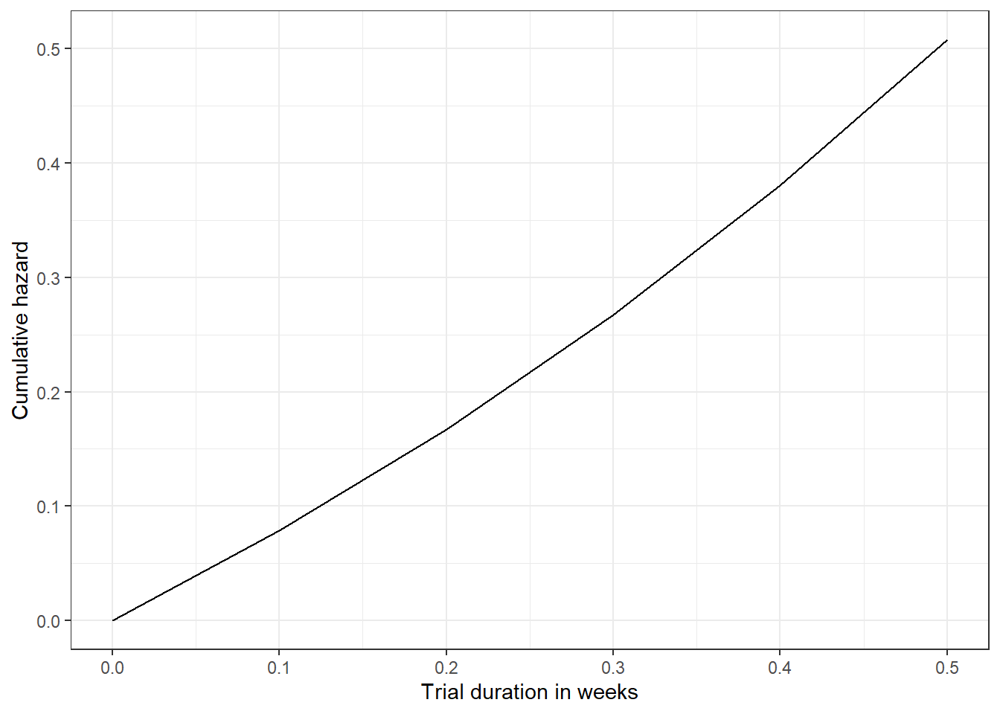

| trial_id | r | N | dur | arm_type | double_blind | triple_blind | mean_age10 | prop_female |
|---|---|---|---|---|---|---|---|---|
| 1 | 25 | 100 | 0.50 | Placebo | 1 | 0 | 5.47 | 49.1 |
| 1 | 31 | 101 | 0.50 | Active | 1 | 0 | 5.78 | 50.9 |
| 2 | 73 | 203 | 0.25 | Active | 0 | 1 | 6.31 | 52.8 |
| 2 | 91 | 204 | 0.25 | Placebo | 0 | 1 | 5.97 | 48.6 |
Trial conduct model
Summary
We will develop a conduct stage model by constructing trial-level and participant-level sub-models. The trial-level model will allow us to generate a baseline hazard rate for any trial given the trial-level characteristics. The participant-level model will enable us to modify the baseline hazard rate by applying hazard ratios for participant-level characteristics.
Trial sub-model
Data
Model description
The trial sub-model will be similar to the design model but with the addition of aggregated participant-level characteristics that are present in IPD (e.g. age, sex). The model structure will be identical to the design model.
Partipant sub-model
Data
| trial_id | subject_id | status | time | arm_type | age10 | sex | other_covariates |
|---|---|---|---|---|---|---|---|
| 1 | SUBJ13 | 1 | 0.50 | Placebo | 5.68 | 1 | … |
| 1 | SUBJ1870 | 0 | 0.06 | Active | 7.21 | 0 | … |
| 1 | SUBJ2220 | 0 | 0.40 | Active | 4.58 | 0 | … |
| 1 | SUBJ8517 | 1 | 0.50 | Placebo | 49.30 | 1 | … |
Model description
We will fit a stratified Cox model with the inclusion of participant-level characteristics. As trials providing IPD will also be in the aggregate-level dataset, we will incorporate an offset to prevent double-counting of covariate effects when sub-model outputs are combined.
The offset will be calculated using coefficients and covariate values from shared covariates in the aggregate data:
\[\begin{aligned} \text{off}_{j} &= \beta_{1j} \bar{X}_{1j} + \dots + \beta_{kj} \bar{X}_{kj}, \end{aligned}\]where \(\bar{X}_{1ij} \dots \bar{X}_{kij}\) are the aggregate-level covariates and \(\beta_{1j} \dots \beta_{kj}\) are the corresponding coefficients.
With this, the stratified cox model formula for participant \(i\) in trial \(j\) can be expressed as:
\[\begin{aligned} h_{ij}(t) &= h_{0j}(t) \cdot \exp \left(\gamma_{1ij}X_{1ij} + \dots + \gamma_{kij}X_{kij} - \text{off}_{j} \right), \end{aligned}\]where \(h_{0j}(t)\) is the stratum-specific baseline hazard for trial \(j\), \(X_{1ij} \dots X_{kij}\) are the participant-level covariates and \(\gamma_{1j} \dots \gamma_{kj}\) are the corresponding log-hazard ratios.
Model code
library(survival)
agg_offset <- data.frame(
trial_id = c(1, 2, 3),
offset = c(-0.2, -0.05, -0.3)
)
cox <- coxph(
Surv(time, event) ~ age10 + sex + treatment + offset(agg_offset) + strata(trial_id),
data = df
)
summary(cox)
cox.zph(cox)
tidy(cox)Model code with coefficient shrinkage
We will apply LASSO (Least absolute shrinkage and selection operator shrinkage) using the glmnet package. Cross-validation will be performed to find the optimal regularisation parameter that controls the degree of shrinkage applied to each coefficient.
library(glmnet)
# Prep
x <- model.matrix(~ age10 + sex, cox_df)[, -1]
y <- Surv(cox_df$time, cox_df$event)
y2 <- stratifySurv(y, cox_df$nct_id)
# Cross-validated LASSO shrinkage
cv_glm <- cv.glmnet(x, y2, family = "cox", alpha = 1)
# Get coefficients with lowest lambda
coef_min <- coef(cv_glm, s = "lambda.min")
coef_min <- as.numeric(b_coef_min)
# Input coefficients as initial values for cox model
cox_lasso <- coxph(
Surv(time, event) ~ age10 + sex + treatment + offset(agg_offset) + strata(trial_id),
data = df,
init = coef_min
)
summary(cox_lasso)
cox.zph(cox_lasso)
tidy(cox_lasso)Prediction
By fitting participant and trial sub-models, we can extract the outputs of both to make predictions about attrition rates and risk over time. Like the design model, we will make predictions using the Gompertz hazard functions, plugging in “shape” extracted from the trial sub-model, and “rate” as the hazard ratio obtained from the participant sub-model.
| time | rate | hr | haz | chaz |
|---|---|---|---|---|
| 0.0 | 0.7408182 | 1.2 | 0.7408182 | 0.0000000 |
| 0.1 | 0.7408182 | 1.2 | 0.8352702 | 0.0787100 |
| 0.2 | 0.7408182 | 1.2 | 0.9417645 | 0.1674553 |
| 0.3 | 0.7408182 | 1.2 | 1.0618365 | 0.2675153 |
| 0.4 | 0.7408182 | 1.2 | 1.1972174 | 0.3803326 |
| 0.5 | 0.7408182 | 1.2 | 1.3498588 | 0.5075338 |


Prediction with uncertainty
As with the design stage model, we can illustrate the uncertainty of predictions with Monte Carlo simulation using the mvrnorm package.
Example (test data)
# Cox sampling
n <- 100
samples_cox <- mvrnorm(n = n, mu = coef(cox_mdl), sigma = vcov(sigma))
samples_cox <- exp(samples_cox)
# Gomp bayes sampling
n <- 100
mu <- matrix(c(rnorm(100, mean = 0.221, sd = 1), rnorm(100, mean = -1.77, sd = 1)), ncol = 2)
colnames(mu) <- c("rate", "shape")
sigma <- matrix(c(0.0289, -0.0004, -0.0004, 0.0561), ncol = 2)
colnames(sigma) <- c("shape", "rate")
rownames(sigma) <- c("shape", "rate")
samples <- mvrnorm(n = n, mu = mu, sigma = sigma)